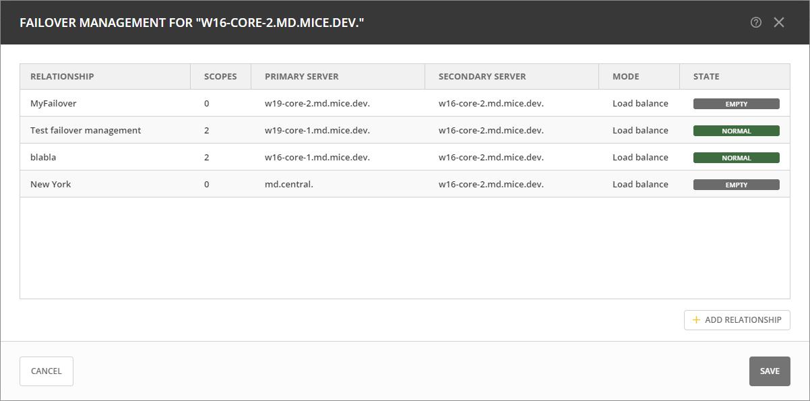
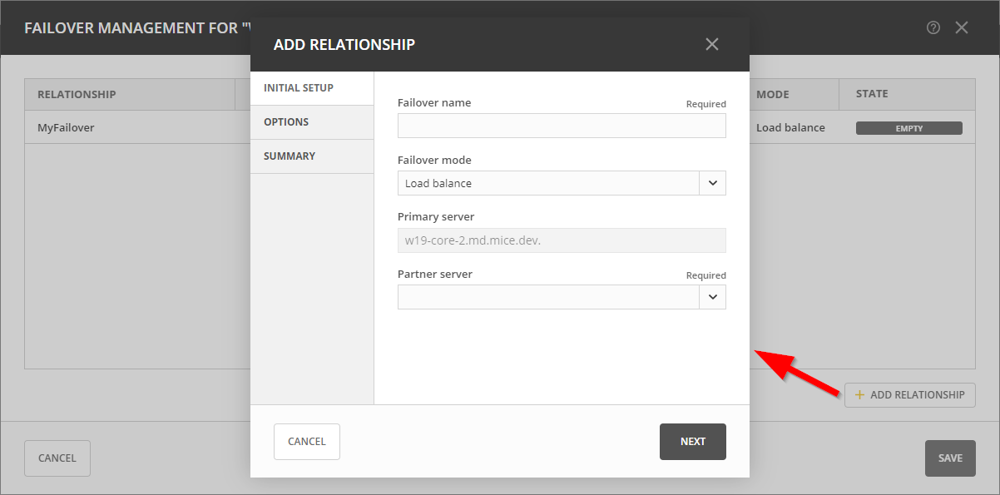
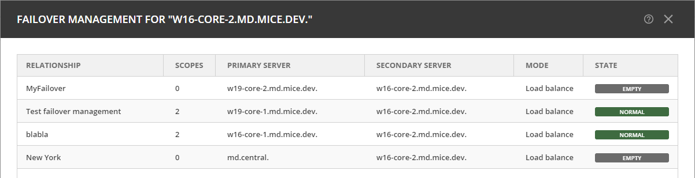

Managing Failover Relationships for Microsoft DHCP Services
Failover relationships for Microsoft DHCP services involve configuring two DHCP servers to work together, providing redundancy for DHCP servers. This is important for ensuring that IP addresses are continuously available even if one server goes down. The failover process involves two key modes:
Hot Standby: In this mode, one DHCP server acts as the primary (active) server, while the other acts as the standby (passive) server. The standby server takes over if the primary server fails.
Load Balancing: Both DHCP servers actively serve IP addresses, distributing the load between them. This mode is designed to optimize resource utilization and provide fault tolerance.
Note
To manage failover between two Microsoft Servers, the DHCP Server Controller must be running as a service account with enough privileges to manage the DHCP service. For more information, see Micetro DHCP Agents.
Viewing Existing Microsoft DHCP Failover Relationships
You can view existing Microsoft DHCP failover relationships at the server level. Micetro automatically detects and syncs all existing failover relationships.
You can retrieve failover relationships through the API using GetDHCPFailoverRelationship(s).
To view failover relationships in Micetro:
On the Admin page, select Service Management in the upper-left corner.
In the left sidebar, under DHCP Services, select Microsoft DHCP.
Select the server you want to view, and then select Failover management either on the Action or the Row … menu.
The Failover Management window will show all relationships associated with the selected server.

{kind=link}
Creating Failover Relationships for Microsoft DHCP
Micetro manages failover relationships at both the scope and server levels. Scopes group IP addresses logically and help to manage failover efficiently. DHCP configurations can be customized per scope to suit the specific requirements of different network segments.
When creating failover relationships for Microsoft DHCP servers, scopes are not added to the relationship at the time of creation. Instead, the scopes are added later by using the Add scope to failover action.
To create a failover relationship through the API
API supports creation using AddDHCPFailoverRelationship.
The following parameters are used for the AddDHCPFailoverRelationship command:
Name: The name of the DHCP failover relationship to be created.
PrimaryServer: The name of the primary DHCP server as it appears in Micetro.
SecondaryServer: The name of the secondary DHCP server as it appears in Micetro.
FailoverMode: The DHCP failover mode to use.
Mclt: Specify the number of seconds for which either server can renew a lease without contacting the other.
SafePeriod: Safe period time in seconds, that the DHCPv4 server will wait before transitioning the server from the COMMUNICATION-INT state to PARTNER-DOWN.
Percentage: Indicates the percentage of the DHCPv4 client load that will be shared between the primary and secondary servers in the failover relationship.
SharedSecret: The shared secret key associated with this failover relationship.
To create a failover relationship in Micetro:
On the Admin page, select Service Management in the upper-left corner.
In the left sidebar, under DHCP Services, select Microsoft DHCP.
Select the server that you want as the primary server in the relationship, and then select Failover management on either the Action or the Row … menu.
Select Add Relationship in the lower left corner, and complete the Add Relationship wizard:
Failover Name: The name for the relationship.
Failover Mode: Select the failover mode you want to use. You can choose between Hot standby and Load balance.
Partner Server: Select the partner server for the failover configuration.
Addresses reserved for standby server: If you chose the Hot standby mode, you must set the percentage of addresses reserved for the standby server.
Local Server Load Balance Percentage: If you selected the Load balance mode, you must specify the load balance percentage for the local server. The remaining percentage will be used on the partner server.
Maximum Client Lead Time: Enter values in seconds if different from the default.
State Switchover Interval: Specify an interval in seconds for Automatic State Switchover; zero means it’s disabled.
Shared Secret for Message Authentication: If you want to use message authentication between the DHCP servers, you must provide a shared secret for the message authentication.
After confirming the details on the Summary tab, click Add.
{kind=link}
Adding Scopes to Microsoft DHCP Failover Relationships
Failover relationships will initially appear as “Empty” and must be activated by adding a scope on the IPAM page. You can either create a new scope or select an existing one. If the failover relationship was previously empty, it will be created on the Microsoft DHCP server.
To add scopes to the relationship, do one of the following:
On the IPAM page, locate the scope, then select Add scope to failover on either the Action or the Row … menu:
{kind=link}
-OR-
Create a new scope, and select the failover relationship during creation:
{kind=link}
-OR-
API offers
AdsdDHCPScopesFromDHCPFailoverRelationshipwhich adds scopes to failover relationships. Specify a reference to the DHCP Scope and the failover relationship name.
If the failover relationship was empty before the scope was added to it, the status will change from “Empty” to “Normal”.
{kind=link}
Removing Scopes from Failover Relationships
Microsoft DHCP scopes participating in failover relationships are grouped and labeled as such in the Authority column on the IPAM page. The Failover relationship column displays the name of the failover relationship to which the scope belongs.
To remove a scope from a failover relationship, do one of the following:
Locate the specific scope on the IPAM page, then select Remove from failover on either the Action or the Row … menu.
{kind=link}
-OR-
Locate the specific scope on the IPAM page, then select Manage scope instances on either the Action or the Row … menu. Select Remove scope instance for the relevant server.
{kind=link}
-OR-
The API offers
RemoveDHCPScopesFromDHCPFailoverRelationshipwhich removes scopes to failover relationships. Specify a reference to the DHCP Scope, the failover relationship name, and the proper deconfigure action.
Modifying Failover Relationships
You can modify ISC failover relationship options on a per-relationship basis.
To modify a failover relationship, do one of the following:
Go to the Service Management tab on the Admin page, select the server containing the relationship you want to modify, and then select Failover management either on the Action or the Row … menu.
Select the relevant relationship, and then select Edit on the Row … menu.
Make the desired changes and select Save.
-OR-
The API offers
ModifyDHCPFailoverRelationship. The following parameters are used for theModifyDHCPFailoverRelationshipcommand:Name: The name of the DHCP failover relationship to be created.
PrimaryServer: The name of the primary DHCP server as it appears in Micetro.
SecondaryServer: The name of the secondary DHCP server as it appears in Micetro.
FailoverMode: The DHCP failover mode to use.
Mclt: Specify the number of seconds for which either server can renew a lease without contacting the other.
SafePeriod: Safe period time in seconds, that the DHCPv4 server will wait before transitioning the server from the COMMUNICATION-INT state to PARTNER-DOWN.
Percentage: Indicates the percentage of the DHCPv4 client load that will be shared between the primary and secondary servers in the failover relationship.
SharedSecret: The shared secret key associated with this failover relationship.
Removing Failover Relationships
On the Admin page, select the Windows server containing the relationship you want to remove, then select Failover management on either the Action or the Row … menu.
Select the relevant relationship, and then select Remove on the Row … menu.
If associated relationships exist, you will be prompted to select the server where the scopes should persist and decide whether to delete or disable scopes on the other server.
Replicating Failover Scopes
When configuring a failover relationship, you can replicate scope information between servers. This is possible for individual scopes, all scopes that share a failover relationship, or all scopes on a particular DHCP server.
During the scope replication process, the scopes on the selected DHCP are considered the source scopes, and the entire content of these scopes is subsequently replaced on the destination server.
Replicating Individual Scopes
On the IPAM page, select a scope in a failover relationship.
Select Recplicate failover relationships on either the Action or the Row … menu.
Select the destination server, and then click Confirm.
Replicating All Scopes in a Failover Relationship
On the Admin page, select on of the Microsoft DHCP servers that you want in the relationship.
Select Recplicate failover relationships on either the Action or the Row … menu.
Select the failover relationship, and then select Replicate failover relationship on the Row … menu.
Click Confirm.
Replicating All Failover Scopes on a DHCP Server
Note
During the replication process, the scopes designated on the chosen DHCP server serve as the source scopes. Subsequently, the entire contents of each scope are substituted on the partner server, ensuring a comprehensive and synchronized replication of scope information between the two servers.
On the Admin page, select one of the Microsoft DHCP servers that you want in the relationship.
Select Recplicate failover relationships on either the Action or the Row … menu.
Click Confirm.